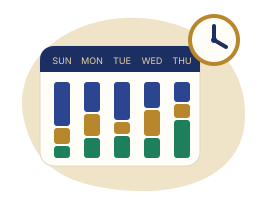
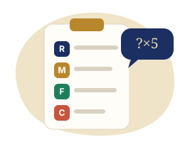
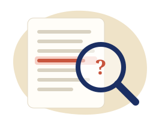
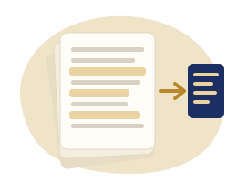
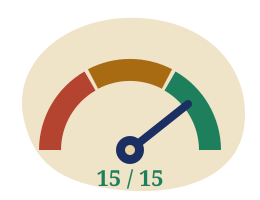
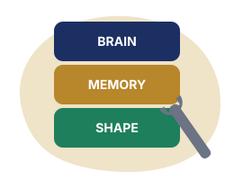
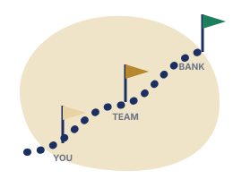
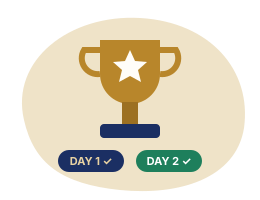

Estimate · drag the sliders
Guess how Sara's week splits
Sara works about 45 hours a week. How much of it is reading and assembling, writing and rewriting, and actually with clients?
AI for Relationship Managers · an interactive visual story
Follow Sara, a private banker in Riyadh, through one week with an AI assistant. She has a review on Thursday with Client A, a family business in its second generation, and a pile of reading and writing between her and that meeting.
You will estimate, sort, build prompts, hunt for invented figures, redact a client note, and stress-test a tool until it holds. Along the way you will find out a few things about the tool, and about yourself.
Private banking RM, Riyadh. Fourteen client families. Writes in Arabic and English. Wants her Thursday back.
Second-generation family business. Principal (58) and his eldest son, who now joins every meeting. Portfolio about SAR 45m.
Fast, fluent, tireless. Knows only what it is given. Never says "I am guessing" unless told to.
Every client, figure and document here is synthetic. AI responses are teaching simulations written to show real behaviour patterns, not live model output.
Act 1 · Fit
Before any tool, decide which hours are worth buying back. Not all of them are.

Estimate · drag the sliders
Sara works about 45 hours a week. How much of it is reading and assembling, writing and rewriting, and actually with clients?
Sort · drag or tap a card, then a bin
Put each task where it belongs. Each card flips over to tell you why.
Calculate · move the sliders
Every AI task has a fixed cost: explaining it, then checking what comes back. Find the point where that cost stops paying off.
Sort · bank-ready, or still a draft?
Ten pieces of AI output from Sara's week. Decide which could go out under the bank's name as they stand, and which are still drafts.
Act 2 · Brief
The difference between a useless answer and a usable one is almost always the brief, not magic words. The test: could a competent stranger produce what you want from your instruction alone?

Build · switch the four parts on and off
Sara's task: prepare for Thursday's review with Client A. Start with the lazy prompt and add the four parts in any order. Watch the guesses counter.
Write · type your own brief
Write a brief for Sara's next task: a follow-up email to Client A's son after Thursday's review, confirming the next step. Feedback appears as you type.
Choose your path · your reaction decides what happens
The assistant's first draft is too long, has a paragraph of speculation, and calls the murabaha deposit a "loan". What do you do?
Match · tap a reader, then what "professional" means to them
The reader decides what professional looks like. Match each reader to their register.
Act 3 · Trust
A wrong answer looks exactly like a right one. This act explains why it happens, and measures how much fluent writing fools you.

Predict, then trace · find the line with no source
The tool writes the most plausible next words, one piece at a time. Plausible is not the same as true. When the material runs out, plausible is all that is left.
Rate your confidence · then see the file
Six statements the assistant wrote about Client A's file. All are written equally well. Rate each one before you see the source.
Simulated chat · push back and watch
Sara asks a simple question and gets the right answer. Then she pushes back.
Timed hunt · 90 seconds · click the suspect lines
This pre-meeting brief contains four errors of the kind these tools make: a calculated figure, a wrong date, a softened risk, and a currency mix-up. Find them before the timer ends, then check against the source.
Act 4 · Documents
Uploading the material is the biggest quality jump available. Without material it guesses. With material it works, within limits you should know.

Choose the move · then see the result
For each request Sara makes about Client A's file, pick the move. Then see what the move produces and how risky it is.
Explore · slide the fact through the file
In a 40-page file, one line matters: the real estate fund's lock-up ends in December 2026. Move that line to different pages and see how reliably a long summary keeps it.
Order · use the arrows to sequence the steps
Put Sara's document workflow in the right order.
Act 5 · Voice
Correct is the floor. Clients notice voice long before they notice accuracy, and private clients notice fastest.
Spot · tap every phrase that gives it away
An untouched AI draft to Client A's principal. Tap each phrase that tells him nobody really wrote it. There are eight.
Choose · pick the one you would send
Last quarter, Client A's equity holdings fell. The son asked for a call. Which follow-up would you send?
Flip the cards · then judge the Arabic
Generic AI output slips into conventional banking terms. Flip each card to see the term a Sharia-compliant bank uses.
Act 6 · Safe
Everything else is worthless if one client file leaves the bank. Removing the name is not the same as anonymising.
Synthetic or redacted only. If you would not email it to an external address, do not paste it.
No client identifiers. Names, national IDs, Iqama, IBANs, balances, contact details, anything that maps back to a person.
A human reads it before a client does. Every time. You sign it, you own it.
Filter · add details one at a time
Sara removes the client's name and pastes a "harmless" description. Add each detail she left in and watch how many families it could still describe.
Redact · tap everything that identifies the client
Sara's raw note after a call. Tap every piece that should not go into an external AI tool. Some are obvious. Some hide in the details.
Swipe or tap · Yes / No / Probably
Ten situations from a normal week. Decide fast, as you would at your desk.
Classify · information, advice, or a commitment?
AI drafts drift from describing to recommending without announcing it. In the Kingdom, investment advice is regulated by the Capital Market Authority and runs through licensed processes. Classify each sentence.
Act 7 · Choose
Yesterday Sara used the tool one conversation at a time. Today she builds something that runs the same way every week, and that a colleague can use while she is on leave. Picking the task is where most attempts fail.

Score · five dimensions, live verdict
Pick one of Sara's candidate tasks (or describe your own) and score it honestly. 12 and above: build it. 8 to 11: build it narrow. Below 8: pick something else.
Narrow · choose X, Y and Z
Give it X, and it gives you Y, in under Z minutes, every time. If you cannot fill in X, Y and Z, you are not ready to build.
Act 8 · Build
A tool has three parts: instructions (the brain), reference material (the memory), and an output template (the shape). Everything else is writing those well and breaking them on purpose.

Assemble · drag or tap each piece into place
Nine pieces. Four places. One of the places is a trap.
Compare · zero, one or two examples attached
Same instructions, same input. The only change is how many good past briefs are attached as reference.
Stress test · switch on guardrails until all three cases pass
Run Sara's tool on three test cases: a straightforward one, a different shape, and a deliberately hostile one. Each failure needs a rule, not a nicer adjective. Aim for all three passing with no wasted guardrails.
Act 9 · Adopt
Most tools built in a training room are never opened again. The ones that survive are measured, owned, and reviewed.

Calculate · then copy your one-page case
Put real numbers on Sara's tool and turn them into the one-page case her manager can act on.
Decide · keep, fix or kill
Killing a tool that does not earn its place is a good outcome, not a failure. Make the call.
Three real runs, fixed after each. Do the task by hand alongside the first. Log the time.
Show two colleagues. Run the handover test for real. One owner, one version.
One page: time, controls, the ask. Name what approved real data would unlock.
The big picture

If you remember one thing on Sunday: it drafts, you decide, and every number that leaves your desk is one you checked.
Knowledge check · 15 questions, mixed formats
Answer all fifteen, then see your score, what you missed, and where to look again.
Your results card